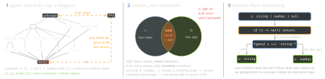
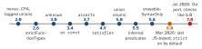

typescript · folio
In one line: A type is a set of values; assignability is subset, judged by
shape, not by name. A union must be narrowed along control flow before use.
Types are erased; enums, namespaces with code and parameter properties are TypeScript
syntax that emits JavaScript. Soundness is traded away on purpose in known places: any, as, method
parameters, readonly aliasing.
Download PDF Print view LaTeX source


Assignability is structural
xis compatible withyifyhas at least the members ofx; names never matter. Classes compare instance members only; aprivate/protectedmember must come from the same declaration — the nominal escape.- Excess properties: only a fresh literal put straight into a typed slot — Object literal may only specify known properties, and ’y’ does not exist in type
’P’. (2353). Via a variable,
asor an index signature it passes. - Weak type (all optional, 2.4): even via a variable one property must match — Type ’{ payload: string; … }’ has no properties in common with type ’Options’. (2559)
object(2.2) = non-primitives; “objectis notObject”.
Top, bottom, special
| type | takes → to | what to remember |
|---|---|---|
unknown | all → unknown, any | no member, call or arithmetic until narrowed
(==, !== allowed); T | unknown = unknown, T & unknown = T;
keyof unknown = never; truthy → {} (4.8) |
any | all → all but never | checking off; members of any are any, so it
spreads |
never | none → all | empty set: T | never = T; what is left when every case
is handled; (): never = cannot return (throws, loops) |
void | undefined | ≠ undefined: a () => void slot takes
() => number (result ignored); a function declared : void may not return a value |
{} | all but nullish | 5 and "" too — not “an empty object” |
Literals, widening, as const
const s = 'a' is 'a', let s = 'a' is string; properties widen too: const req = { method: 'GET' } gives method: string, so passing it to a 'GET' | 'POST' parameter fails — Argument of type ’string’ is not assignable to
parameter of type ’"GET" | "POST"’. as const: no widening, readonly properties and tuples ([10, 20] as const: readonly [10, 20]); literals only; a referenced array inside stays mutable.
annotation · satisfies · as
const r1: Record<string, string> = { home: '/' };
r1.hmoe; // compiles: the annotation IS the type
const r2 = { home: '/' } satisfies Record<string, string>;
r2.hmoe; // error: inferred { home: string } is kept
const r3 = {} as Record<'home', string>; // compiles: a lie
const n = 'hi' as number; // 2352 "... may be a mistake"
const m = 'hi' as unknown as number; // forces anythingas: only to a more or less specific type. x!: non-null, unchecked.
Functions · readonly · optional
- Fewer parameters fit (
forEach(x => …)); returns are covariant; optional ↔ required interchangeable; a rest = endless optionals. - Parameters compare bivariantly (unsound) unless
strictFunctionTypes: then contravariantly — but method syntaxm(x: T): voidstays bivariant “to ensure …Array<T>… relate covariantly”. Strict callback:onX: (e: E) => void. - 5.8 checks each branch of a returned
c ? a : b: in(s: string): URL,c ? anyMap.get(s) : sgives Type ’string’ is not assignable to type ’URL’. readonlyis ignored by assignability:{ readonly x }goes into{ x }and is written through the alias. Arrays differ: The type ’readonly string[]’ is ’readonly’ and cannot be assigned to the mutable type ’string[]’. (4104).a?: Tmay be absent,a: T | undefinedmust be present;exactOptionalPropertyTypesbans writinga: undefined.
Merging · interface vs type
interfaces of one name merge: a shared property must keep its type (2717), methods become overloads, the later block’s first; a type cannot reopen (Duplicate identifier). A namespace merges into a class, function or enum, a class never into a class or variable; declare module './x' only patches existing names. Only type names unions and tuples; extends reports a clashing property, & silently makes it never.
Narrowing — control-flow analysis
typeof:"string" "number" "bigint" "boolean" "symbol" "undefined" "object" "function"—typeof nullis"object". Truthiness drops0 NaN "" 0n null undefined:if (count)loses0.== nullmatchesundefinedtoo."k" in xkeeps members withk(optionalk: both branches); a key no member lists givesx & Record<"k", unknown>(4.9).instanceof: prototype chain.- An assignment narrows within the declared type:
let x = c ? 10 : 'hi'; x = true— Type ’boolean’ is not assignable to type ’string | number’. - Also tracked: a test kept in a
const(4.4);const { kind, payload } = a(4.6);switch (true)(5.3); a closure made after the last assignment (5.4; none if a closure assigns);obj[key]with both unchanged (5.5). A test truthy by its very form is an error (5.6): This kind of expression is always truthy. —if (/re/).
Discriminated unions · guards
type Shape =
| { kind: 'circle'; r: number }
| { kind: 'rect'; w: number; h: number };
function area(s: Shape): number {
switch (s.kind) { // the literal tag narrows s
case 'circle': return Math.PI * s.r ** 2;
case 'rect': return s.w * s.h;
default: const gone: never = s; return gone;
} // a 3rd kind: error above
}
const ns = [1, undefined, 2].filter(x => x !== undefined);
// number[]: the predicate x is number is inferred- Tag = a property every member has, typed by literals. A new kind fails
gone: never(Type ’{ kind: "tri"; … }’ is not assignable to type ’never’.),s satisfies never(1360), or — with nodefaultunder a declared return type — Function lacks ending return statement and return type does not include ’undefined’. (2366). - A predicate body is trusted, not checked:
…: x is string => truecompiles. Inferred only with no return annotation, onereturn, an unmutated parameter, true ⇒Tand false ⇒ notT: so not forx => !!xonnumber | undefined(0). asserts c/asserts v is Tnarrow after the call (the function throws otherwise). The callee needs an explicitly typed name:const check = (c: unknown): asserts c => …;check(v)— Assertions require every name in the call target to be declared with an explicit type annotation. (2775)
Enums as types
- Numeric: any
numbervalue fits, an out-of-range literal does not (5.0:1intoenum E { A = 0, B = 2 }errors); two enums never mix. - String: nominal —
const d: Dir = 'UP'gives Type ’"UP"’ is not assignable to type ’Dir’. - An enum is a union of its members; each member is a type that narrows (
type Primary = Color.Red | Color.Blue). Emit,const enum, erasability and theas constalternative:ts-config-and-practice.
Index signatures · tuples
- Keys:
string,number,symbol, template patterns ([k: `data-${string}`]: unknown, 4.4), unions of them. Under[k: string]: number,name: stringis an error; anumberindex must fit thestringone. [number, number, number?]haslength: 2 | 3; a rest goes anywhere ([...boolean[], string]);readonly [string, number]refusespair[0] = …— Cannot assign to ’0’ because it is a read-only property.
Timeline
